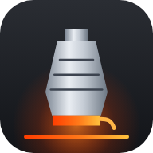

IRON MAKING
Raw material to liquid pig iron
Iron Making is a working tool and training app for iron and steel plant engineers. It covers the whole route, from raw materials to sinter, pellet and coke, and finally hot metal from the blast furnace.
Blast furnaceBurden chemistry, charging, 3D distribution, furnace inside, hearth liquid and tuyere watch.
Sinter, coke & pelletQuality prediction, blend and machine settings for each plant.
BF blow-in / blow-down plannerRecipes, distribution, timelines, predictions and checklists.
Learning moduleTraining, practice and exams for six plants with 3D models and certificates.
Carbon footprintCO₂ per tonne of pig iron, ready for CBAM reporting.
Iron complex project & repairPlan, build and repair work for the whole complex.